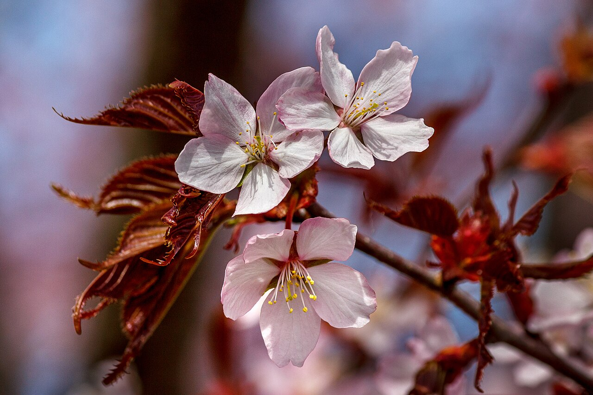
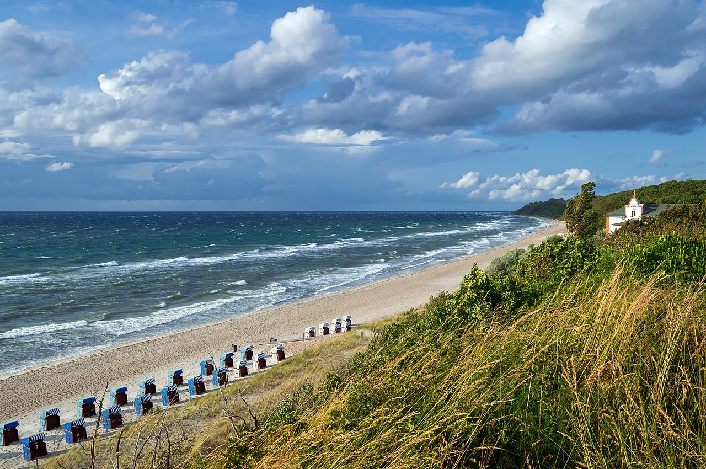
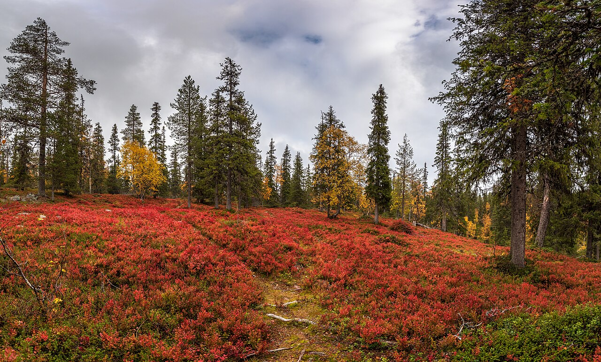
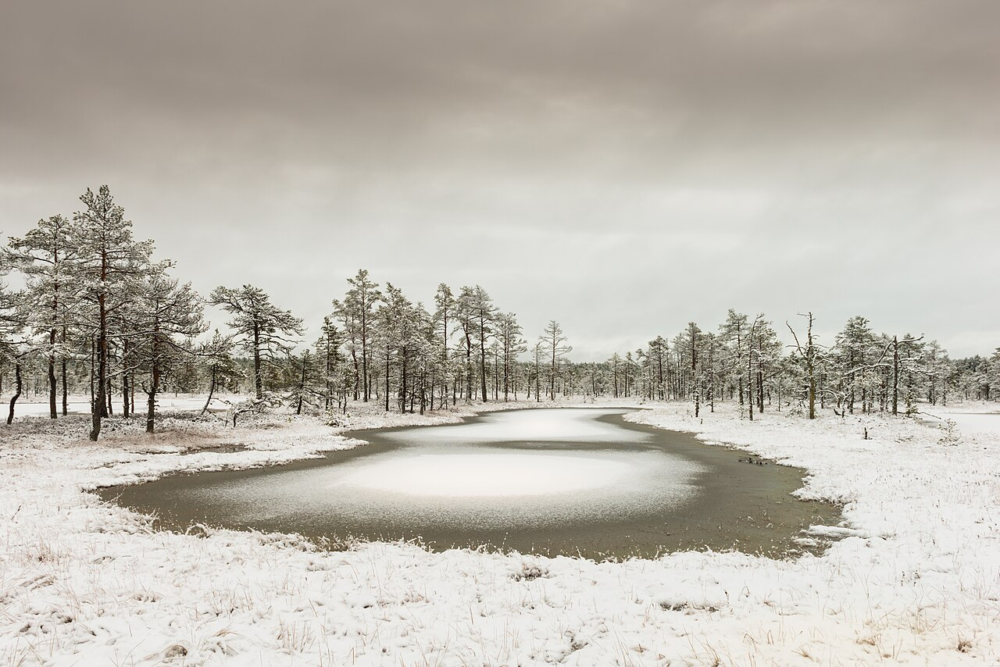

Spring
Every bud is a small act of courage. The cherry trees open before their leaves do, and for two short weeks whole streets turn pale pink. Mornings are still cold, the light arrives a little earlier each day, and the ground smells of rain and turned soil. Begin before you feel ready; the season will meet you halfway.
Summer
Stay out long enough to lose track of time. On the Baltic coast the sky stays light until almost midnight, the sand holds the day's heat long after sunset, and the wind off the water smells of salt and pine. Swim before breakfast, eat outside, walk the dunes at dusk. The best days are the ones you never thought to plan.
Autumn
Letting go can be the brightest part. In Lapland the ruska arrives in September: bilberry and bearberry turn the fells crimson almost overnight, the birches flare gold, and the first frost crisps the paths. The air is clear and the light low and amber. The trees show how beautiful it is to release what you no longer need.
Winter
Quiet is where the next thing grows. On the bog the boardwalk vanishes under fresh snow, the pools freeze from their edges inward, and the pines stand still beneath a low grey sky. Sound carries for kilometres and the days are short. Rest is not the absence of progress; it is where strength is quietly gathered.